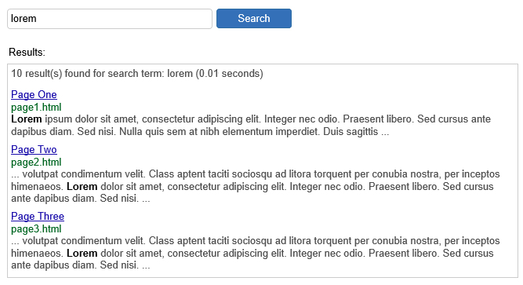
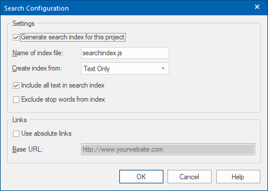
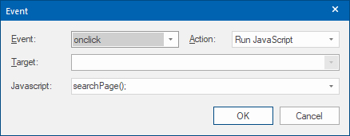
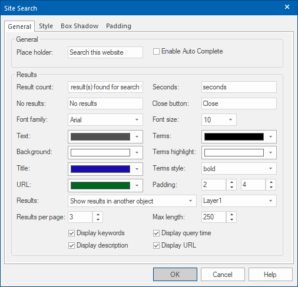
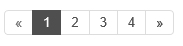

How to add a site search to your website?
WYSIWYG Web Builder has basic built-in 'search engine' functionality, so visitors can search for specific words within your website.
The search option does not have any special server requirements because it uses JavaScript, so it's very easy to insert this component to your page(s).
WYSIWYG Web Builder has basic built-in 'search engine' functionality, so visitors can search for specific words within your website.
The search option does not have any special server requirements because it uses JavaScript, so it's very easy to insert this component to your page(s).
Search Index
Before you add the Site Search object to your page, make sure you have enabled 'Generate Search Index' in Menu->Tools->Search Index otherwise the search index will not be created and the search will not work!
Before you add the Site Search object to your page, make sure you have enabled 'Generate Search Index' in Menu->Tools->Search Index otherwise the search index will not be created and the search will not work!


The example for this tutorial the option Include all text in search index is enabled. This will use all text from the page instead of just unique words. Although this will increase the size of the search index, the search results will look better and it makes it possible to search for phrases. Please see the help for more information about the other options.
Site Search
When you drag the Site Search object to the page, then it will automatically add a button next to the input field. This is a standard button which can be positioned and styled seperately. The Site Search input field has the same styling options as a standard Editbox
When you drag the Site Search object to the page, then it will automatically add a button next to the input field. This is a standard button which can be positioned and styled seperately. The Site Search input field has the same styling options as a standard Editbox
The button is linked to the search input field via an 'onclick' event. This event will trigger the seach script.

Note:
This tutorial does not describe all available Site Search properties, only the ones that are used in this example.
For more details about the other options please see the help.
This tutorial does not describe all available Site Search properties, only the ones that are used in this example.
For more details about the other options please see the help.
Search Results
The most important part of the Site Search is the results. There are many options available to control the result output.
The most important part of the Site Search is the results. There are many options available to control the result output.

Besides styling options, like font, colors and padding, there are also options to specify where the results will be displayed.
In this tutorial we will use Show results in another object. To make this work we have to add another object to the page, in this case a Layer. Of course you can change the background, border and other properties or the layer. If the layer has any child elements, then the will be replaced by the search results!
To make sure the results will be not displayed outside the layer, you can use one of these options:
1. Set the 'overflow' property of the layer to 'scroll'. This will add a scrollbar to the layer.
or
2. Set "Results per page" to a value larger than 0 to enable pagination.
In this tutorial we will use Show results in another object. To make this work we have to add another object to the page, in this case a Layer. Of course you can change the background, border and other properties or the layer. If the layer has any child elements, then the will be replaced by the search results!
To make sure the results will be not displayed outside the layer, you can use one of these options:
1. Set the 'overflow' property of the layer to 'scroll'. This will add a scrollbar to the layer.
or
2. Set "Results per page" to a value larger than 0 to enable pagination.

Tip:
If you want display the results in a column of a layout grid then you can also use 'LayoutGrid1 .col-1' for the results.
Where LayoutGrid1 is the ID of the layout grid and .col-1, the column number.
If you want display the results in a column of a layout grid then you can also use 'LayoutGrid1 .col-1' for the results.
Where LayoutGrid1 is the ID of the layout grid and .col-1, the column number.
You can view a live demo here:
https://www.wysiwygwebbuilder.tk/support/sitesearch
Download the demo project:
https://www.wysiwygwebbuilder.tk/support/sitesearch/sitesearch.zip
https://www.wysiwygwebbuilder.tk/support/sitesearch
Download the demo project:
https://www.wysiwygwebbuilder.tk/support/sitesearch/sitesearch.zip
Testing Site Search
To test the Site Search in preview you will need to preview the entire website, otherwise the search index will not be created.
To test the Site Search in preview you will need to preview the entire website, otherwise the search index will not be created.